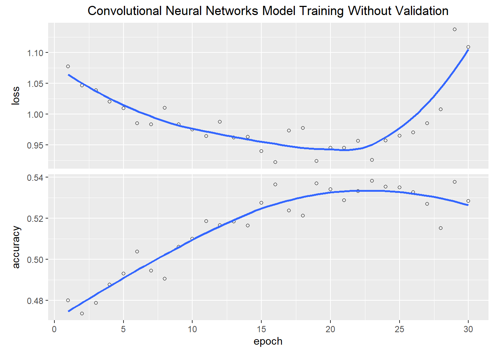

deKlerk Mandela Mbeki Motlanthe Ramaphosa Zuma
1 7 10 1 7 10 Model Selection in Text Classification: A Study on Predictive Approaches for President Identification
Abstract
This report explores South African presidential State of the Nation Address (SONA) speeches. The aim is to construct predictive models that identify individual presidents by analyzing sentences from their SONA speeches. Text mining techniques are employed to analyse the semi-unstructured data.
Six models were constructed using three predictive models: feedforwards neural network, convolutional neural network and classification tree, and two data structuring techniques were used: top words bag-of-words and converting text-to-sequence. The data was split into 70% training and 30% testing for all models. However, two of the neural networks constructed used 20% of the training data for cross-validation. The neural network models evaluated the text-to-sequence data, while the classification tree models evaluated the bag-of-words data.
Results: Neural network models showed overfitting issues, while classification models, particularly the top 500 bag-of-words classification tree, demonstrated better consistency between training and testing data. Kappa statistics indicated a weak agreement between predicted and actual classifications.
Conclusion: The top-performing model is a classification tree using the top 500 bag-of-words. To improve model performance, a larger and balanced sample of presidential speeches is needed.
Introduction
This report investigates speeches made by South African presidents at the State of the Nation Address (SONA). In these speeches the presidents address the nation on the prevailing situation, the SONA serves as an account of the country’s progress, challenges, and policy directions. The analysis of these speeches over time can offer insights into the evolving political landscape, priorities of each presidency, and the utilization of language by different leaders.
This report aims to construct predictive models which can discern the distinctions between different presidents. These models will be designed to take a sentence from the SONA speeches as input and predict which President delivered it.
literature Review
Text mining techniques were employed to achieve the research objectives. These techniques enable the analysis of unstructured textual data collections.
Neural Network: A neural network contains connected neurons with associated weights. It processes data chronologically and learns by comparing its classifications to the actual target variable [1]. Neural networks possess robustness, self-learning capabilities, and adaptiveness, this makes them advanced classifiers [1]. They consist of three essential layers: the input layer, the hidden/intermediate layer, and the output layer.
The neural network models in this study utilized specific activation functions:
Softmax Activation Function: This function is crucial in the output layer of neural networks, especially for multi-class classification. It converts output scores into class probabilities, ensuring that the probabilities sum to one.
Rectified Linear Unit (ReLU) Activation Function: ReLU replaces negative values with zero while retaining positive values. It is widely used in hidden layers of neural networks to expedite convergence during training and mitigate the vanishing gradient problem.
Classification Tree: Classification trees, also referred to as decision trees, are a data mining classification technique. They employ a branching method to represent decision outcomes [2]. Decision trees learn from data to approximate decision-making processes through a set of IF-THEN rules [2]. These trees are valuable for decision-making and have the ability to depict various possible outcomes [2].
Data and Methods
Data Preprocessing
President speeches in text format form 1994-2023 were downloaded from the sona website and read into a data frame for preprocessing. The speeches were semi-structured but were of different sizes so tabulation could not be automated. Information like the name of the president who delivered the speech, the date and the year the speech was delivered were manual extracted from each speech for tabulation. The table below shows the number of speeches per president in the data set.
It is evident from the table presented that the dataset is not balances. Over sampling or under sampling the dataset was contemplated, but because of the significant difference in sample sizes, removing the two underrepresented president speeches was opted for instead to avoid introducing biases to the data.
The way dates were formatted was adjusted to ensure consistency and unnecessary text like dollar signs and asterikes were also removed from the data to be analysed. Once the data was successfully tabulated in a satisfactory format, the speeches were tokenised into sentences and words for the analysis stage. The table below shows the number of sentences per president in the dataset.
Mandela Mbeki Ramaphosa Zuma
1583 2248 2135 2365 Text to Sequence
Neural networks were one of the methods implemented in this investigation to make the predictions. This method requires numeric inputs, so the data had to be transformed into numeric form. To do this, the dataset containing the sentences by each president were converted to sequence, with a maximum length of 70 and 1500 maximum features. Sentences of lengths less than 70 were padded with zeros to satisfy the length requirement.
The target variable was converted to a numeric categorical variable.The result of this transformation was target matrix of zeros and ones with four columns,each representing the respective presidents in the dataset.
Bag of words
In this investigation, different data structuring techniques were employed to prepare the input data. A technique where a fixed number of the most frequently occurring words were selected from the dataset and assembled into a collection was used in this case. This collection of words are known as a “bag of words”. The bag-of-words method is limited in that it loses important textual details, such as word arrangement, sentence organization, and contextual information. These are the very elements that humans rely on to comprehend and make sense of text.
This input data was used to fit the classification tree models.
Testing and Training
Each input set was split into two datasets, one set to train the models and the other to test it. The training datasets contained 70% of the data and the testing sets contained the remaining 30%. The data was split in a balanced way to ensure that 70% of the data from each president was represented in the training set and the remaining 30% in the testing set.
Methods
This analysis was conducted using R software,three different types of models were constructed to assess the pre-processed input data. Keras library functions were used to develop the neural network models presented in this study and Rpart library functions were used to fit the classification trees.
Feedforward Neural Networks (FNN)
Feedforward neural network models were built to evaluate the text to sequence data. The models were designed for a multi-class classification with 4 units in the final dense layer. The dense layer used the softmax activation function to output a probability distribution over the classes. The model had an embedding layer as the input layer, this layer converts input sequences into a continuous vector space representation. The input layer was followed by a regularization layer with a dropout rate of 0.2, which means 20% of the neurons in the previous layer were randomly set to zero during each training epoch to helps mitigate overfitting. The dropout layer was followed by a hidden dense layer with 100 units and utilized ReLU activation. The model was trained with categorical cross-entropy loss and monitored with early stopping to optimize training.The adam optimiser with the learning rate set to 0.01 was used.
Two feedforward models with the same architecture were built to access the effect of cross validation and early stopping on accuracy. One model implemented cross validation and early stopping while the other did not.
Figure 1 shows a graph of the model training results when cross-validation and early stopping were not implemented.
Figure 2 shows a graph of the model training results when cross-validation and early stopping were implemented.
Early stopping can only be implemented when there is cross-validation, in this case 20% of the training data was set aside for cross-validation at each epoch. The model was designed to stop training if the recorded validation loss continuously increased without improvement for 10 epochs. This was done to prevent overfitting to the training data and to select the optimal model that performs well on unseen data.
Convolutional Neural Networks (CNN)
The convolutional neural network (cnn) models were designed to be very similar to the feedforward neural network models. The CNN models had a more complex architecture, involving one dimensional convolutional and max-pooling layers. The convolutional layer had 64 filters, a kernel size of 8, and it utilised the ReLU activation function. This layer is particularly effective for identifying specific patterns in text data. The max-pooling layer had a maximum pool size of 2. This layer is responsible for dimension reduction of the data, this makes the layers in the model more computationally efficient.
Like the previous section two CNN models were developed, one model implemented cross validation and early stopping while the other did not.

Figure 3 shows a graph of the model training results when cross-validation and early stopping were not implemented.

Figure 4 shows a graph of the model training results when cross-validation and early stopping were implemented. 20% of the training data was set aside for validation at each epoch.
Classification Trees
Two classification trees were fitted to the bag-of-words datasets. One bag-of-words dataset selected the top 100 words from the speeches while the other selected the top 500 words.
Figure 5 displays the classification trees generated using the bag-of-words input datasets. Notably, both resulting trees are classifying the input into just two categories, even though the task involves classifying into four distinct classes.
Results and Discussion
Below is a table which shows the model accuracy results for the six models which were constructed.
| Training Acc | Validation Acc | Testing Acc | kappa | P-Value | |
|---|---|---|---|---|---|
| FNN | 0.9 | 0.277 | 0.058 | 0.944 | |
| FNN.CV | 0.856 | 0.488 | 0.295 | 0.058 | 0.944 |
| CNN | 0.613 | 0.304 | 0.058 | 0.944 | |
| CNN.CV | 0.578 | 0.464 | 0.277 | 0.058 | 0.944 |
| Top100 CT | 0.591 | 0.455 | 0.25 | 0.154 | |
| Top500 CT | 0.636 | 0.545 | 0.375 | 0.051 |
The feedforward neural network models (FNN) performed best on the training data but poorly on unseen data. The same trend is apparent with the convolutional neural network models (CNN). This trend implies that the models are over fitting the training data. The difference between the results of models which applied early stopping and cross validation (FNN.CV|CNN.CV) and those which did not (FNN|CNN), are not suggestively different. Which means that applying early stopping and cross validation did not improve the results of these models.
The classification models (Top100 CT|Top500 CT) performed better than the neural network models. Though the accuracies of these models were also not satisfactory, there was great consistence between how the models performed with seen and unseen data. The classification tree built from the top 500 bag of words produced the best accuracy on unseen data.
Kappa, also known as K , is a statistic that is used to evaluate the agreement between predicted classifications and actual classifications. The kappa statistic ranges from -1 to 1:
A K value of 1 indicates perfect agreement beyond chance.
A K value of 0 indicates agreement that is exactly what would be expected by chance.
A K value less than 0 suggests less agreement than would be expected by chance, indicating that the models are disagreeing more than they would if their choices were random.
Kappa is particularly useful when assessing the performance of a classification model, especially in situations where class distributions are imbalanced, like in this case.
The K values for all the classification models indicate that there is a weak agreement between the predicted classifications and the actual classifications. The Top500 bag-of-words classification tree models remains the best model as it shows a higher agreement between the predicted and the actual beyond chance.
The P-value is used to determine the significance of a statistical result. A p-value of less than or equal to the chosen significance level suggests that the observation results are statistically significant. In this case the chosen significance level was 0.05, which means that all the results obtained were statistically significant. The Top500 bag-of-words classification model had a p-value on 0.051, 0.001 units above the cutoff limit. So, with some improvements such as increasing the sample size, the model has potential to produce statistically significant results
Evaluating performance of the model with the best accuracy results
Below is a confusion matrix which shows how the top 500 bag-of-words classification tree model performed on the test dataset.
| Mandela | Mbeki | Ramaphosa | Zuma | |
|---|---|---|---|---|
| Mandela | 0 | 3 | 0 | 0 |
| Mbeki | 0 | 3 | 0 | 0 |
| Ramaphosa | 0 | 2 | 0 | 0 |
| Zuma | 0 | 0 | 0 | 3 |
The model perfectly classifies the content delivered by President Mbeki and President Zuma. Figure 5 shows that the classification tree which was built only classifies into two classes which are related to these presidents. It is also noteworthy that these presidents have more speeches than President Mandela and President Ramaphosa. Which implies that sample size may be the reason why the model failed to successfully build and classify into the 4 expected classes.
Conclusion
The best predictive model to use on this data is a classification tree which takes the top 500 bag-of -words from the speeches as input. A bigger and balanced sample of the president speeches is required for the model to perform well.
References
[1] Prasanna, P.L. and Rao, D.R., 2018. Text classification using artificial neural networks. International Journal of Engineering & Technology, 7(1.1), pp.603-606.
[2] Noormanshah, W.M., Nohuddin, P.N. and Zainol, Z., 2018. Document categorization using decision tree: Preliminary study. International journal of engineering & technology, 7(4.34), pp.437-440.
[3] OpenAI. (Year). “GPT-3.5 Architecture.” Available at: https://www.openai.com/gpt-3/ (Accessed: October , 2023).